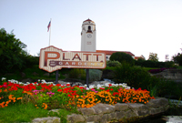
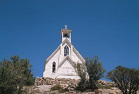
 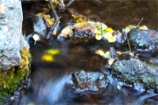
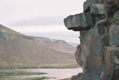
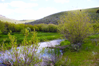
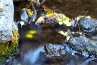
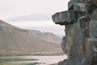
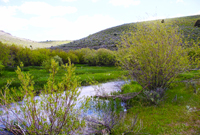
 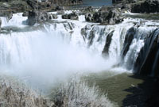
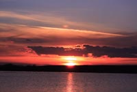
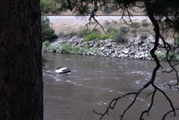
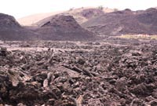
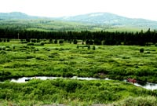
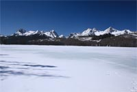
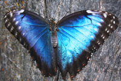
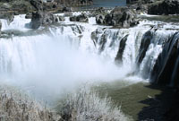
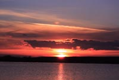
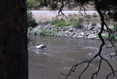
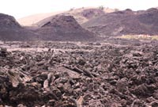
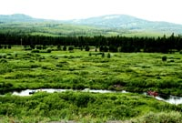
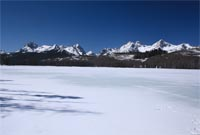
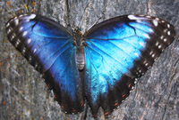
| Hello and welcome to my Web site, the following images are just a small sampling of the images I have taken for you to enjoy on my site. Most of the images on my site are of southwestern Idaho, most are in the Boise Idaho area along with Owyhee Mountains of the southwestern part of the state of Idaho, I have over 70,000 images in my portfolio and this site only displays approximately 140 of those so enjoy my great outdoor images. |